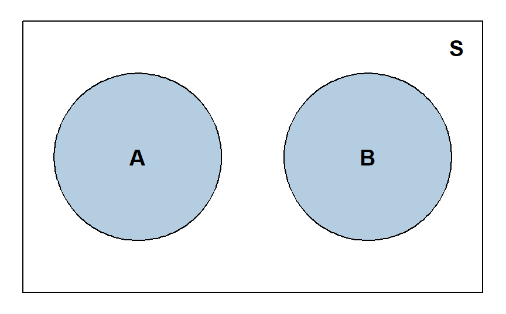
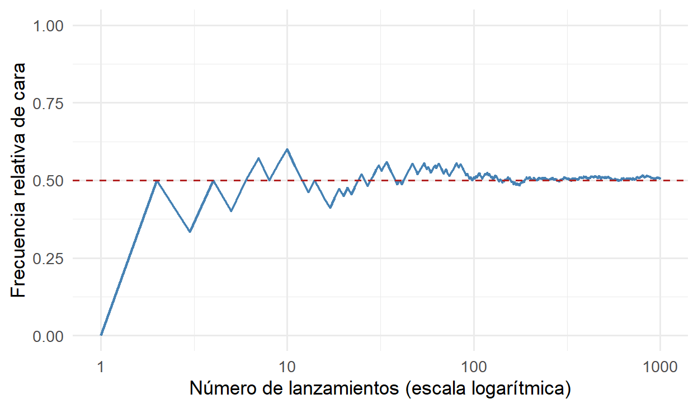
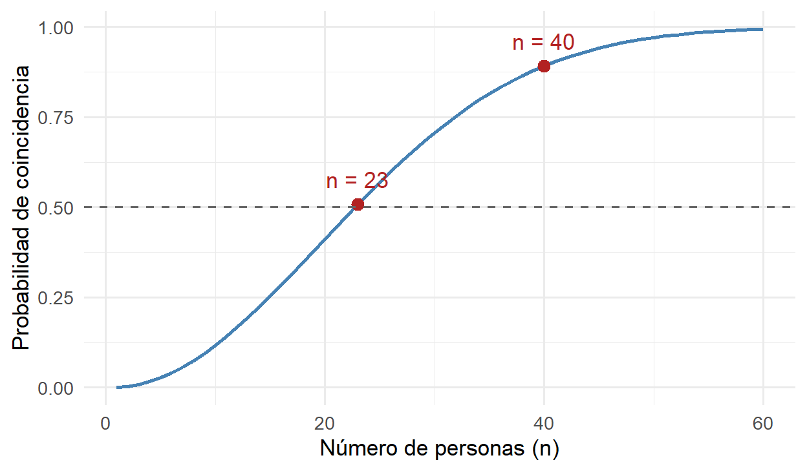
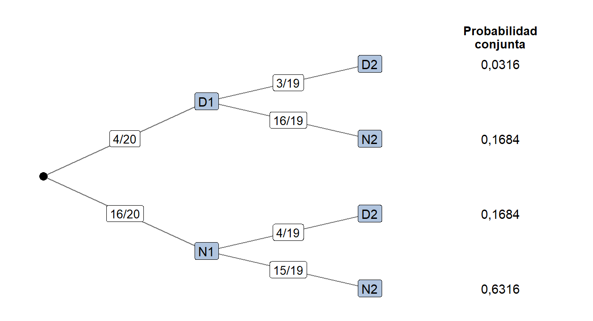
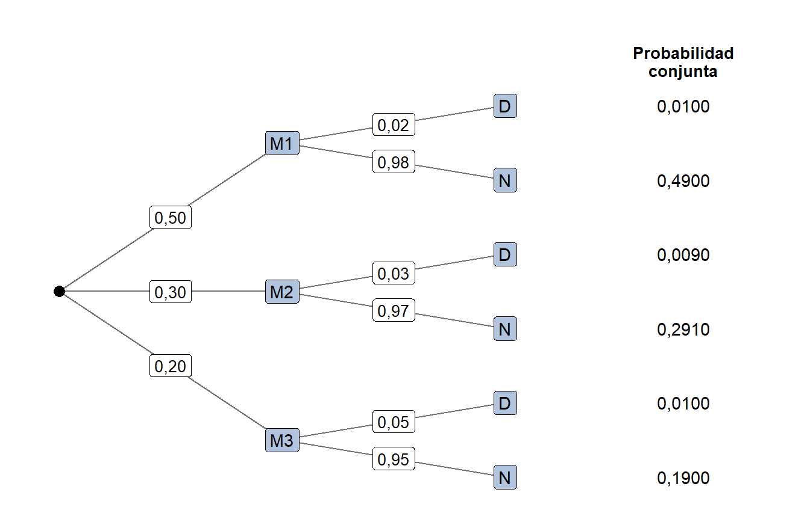
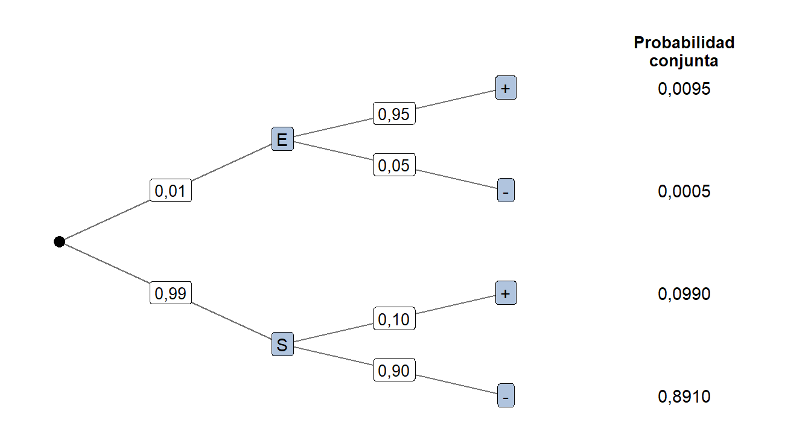

Capítulo 2: Teoría de la probabilidad
Objetivos del capítulo
Al terminar este capítulo, usted estará en capacidad de:
- identificar experimentos aleatorios y describir su espacio muestral y sus eventos;
- distinguir las interpretaciones clásica, frecuentista y subjetiva de la probabilidad;
- aplicar los axiomas y las reglas básicas de la probabilidad;
- usar las técnicas de conteo para calcular probabilidades;
- calcular probabilidades conjuntas, marginales y condicionales, y reconocer eventos independientes;
- aplicar el teorema de la probabilidad total y el teorema de Bayes;
- usar R para calcular y simular probabilidades.
En el capítulo anterior describimos datos que ya habían sido observados. Pero muchas de las decisiones importantes se toman antes de observar: un ingeniero quiere saber qué tan probable es que un lote de piezas tenga defectos, un banco qué tan probable es que un cliente deje de pagar, un médico qué tan probable es que un paciente con una prueba positiva esté realmente enfermo. La probabilidad es el lenguaje matemático para medir esa incertidumbre, y es el puente entre la estadística descriptiva y la inferencia estadística, que se estudia en el curso de Estadística II (Walpole et al., 2012, p. 2).
La teoría de la probabilidad
Es el estudio de la incertidumbre y de la aleatoriedad. Proporciona las herramientas para cuantificar los posibles resultados de un experimento aleatorio, el concepto con el que comienza este capítulo.
1 Experimento aleatorio, espacio muestral y eventos
1.1 Experimento aleatorio
Definición 1 (Experimento aleatorio) Un experimento aleatorio es un proceso que cumple tres condiciones:
- puede repetirse, al menos en principio, en condiciones similares;
- se conocen de antemano todos sus resultados posibles;
- no puede predecirse con certeza cuál de ellos ocurrirá en una realización particular.
Son experimentos aleatorios lanzar un dado, inspeccionar tres piezas producidas por una máquina y anotar si cada una es defectuosa o no, contar el número de clientes que llegan a un banco en una hora, o medir el tiempo que funciona un bombillo antes de fundirse. En cambio, calcular el interés que genera un CDT a tasa fija no es un experimento aleatorio: su resultado es determinístico (véase la sección Variables determinísticas y aleatorias del capítulo 1).
1.2 Espacio muestral
Definición 2 (Espacio muestral) El espacio muestral \(S\) de un experimento aleatorio es el conjunto de todos sus resultados posibles. Cada elemento de \(S\) se llama punto muestral o resultado elemental.
Ejemplo 1 Algunos espacios muestrales:
- Lanzar un dado: \(S = \{1, 2, 3, 4, 5, 6\}\).
- Inspeccionar tres piezas y anotar si cada una es defectuosa (\(D\)) o no defectuosa (\(N\)): \[ S = \{NNN,\ NND,\ NDN,\ DNN,\ NDD,\ DND,\ DDN,\ DDD\}. \]
- Contar los clientes que llegan a un banco en una hora: \(S = \{0, 1, 2, 3, \ldots\}\).
- Medir el tiempo de vida de un bombillo, en horas: \(S = \{t : t \ge 0\}\).
Los espacios muestrales de los literales a y b son finitos; el del literal c es infinito numerable, porque sus elementos pueden enumerarse aunque no terminen, y los tres son discretos. El del literal d es continuo: contiene todos los números reales de un intervalo. Esta distinción será fundamental en el capítulo 3, cuando estudiemos variables aleatorias discretas y continuas.
Para experimentos que se realizan en etapas, como inspeccionar tres piezas una tras otra, es útil construir un diagrama de árbol, en el que cada nivel corresponde a una etapa y cada camino completo, desde la raíz hasta una hoja, a un punto muestral (Walpole et al., 2012, p. 36).
1.3 Eventos
Definición 3 (Evento) Un evento es cualquier subconjunto del espacio muestral. Se dice que el evento \(A\) ocurre si el resultado del experimento es un elemento de \(A\).
En la inspección de las tres piezas, el evento “al menos una pieza es defectuosa” es \[ A = \{NND,\ NDN,\ DNN,\ NDD,\ DND,\ DDN,\ DDD\}, \] y el evento “exactamente dos piezas son defectuosas” es \(B = \{NDD,\ DND,\ DDN\}\). Un evento con un solo resultado, como \(\{DDD\}\), se llama evento simple. El propio espacio muestral \(S\) es el evento seguro, porque siempre ocurre, y el conjunto vacío \(\varnothing\) es el evento imposible.
1.4 Operaciones entre eventos
Como los eventos son conjuntos, se combinan con las operaciones de la teoría de conjuntos. Para dos eventos \(A\) y \(B\) de un mismo espacio muestral \(S\):
- Unión, \(A \cup B\): ocurre \(A\), o ocurre \(B\), o ambos. Es el conjunto de resultados que están en \(A\) o en \(B\).
- Intersección, \(A \cap B\): ocurren \(A\) y \(B\) a la vez.
- Complemento, \(A^c\): no ocurre \(A\). Es el conjunto de resultados de \(S\) que no están en \(A\). Algunos textos lo escriben \(A'\) o \(\bar{A}\).
- Diferencia, \(A - B = A \cap B^c\): ocurre \(A\) pero no \(B\).
Estas operaciones se visualizan con diagramas de Venn, en los que el espacio muestral se representa con un rectángulo y los eventos con círculos dentro de él (Figura 1).
Dos propiedades muy útiles para calcular probabilidades son las leyes de De Morgan, que relacionan el complemento con la unión y la intersección: \[ (A \cup B)^c = A^c \cap B^c \qquad \text{y} \qquad (A \cap B)^c = A^c \cup B^c . \] La primera dice, por ejemplo, que “no ocurre ni \(A\) ni \(B\)” es lo mismo que “no ocurre \(A\) y no ocurre \(B\)”.
1.5 Eventos mutuamente excluyentes
Definición 4 (Eventos mutuamente excluyentes) Dos eventos \(A\) y \(B\) son mutuamente excluyentes (o disjuntos) si no pueden ocurrir al mismo tiempo, es decir, si \(A \cap B = \varnothing\). Una colección de eventos \(A_1, A_2, \ldots\) es mutuamente excluyente si cada par de ellos lo es.
Al lanzar un dado, los eventos “sale par” y “sale impar” son mutuamente excluyentes; “sale par” y “sale un número mayor que 3” no lo son, porque ambos ocurren si sale 4 o 6. En un diagrama de Venn, los eventos mutuamente excluyentes se representan con círculos que no se tocan (Figura 2).

Un caso especial muy importante, que usaremos en el teorema de Bayes, es el de una colección de eventos que, además de ser mutuamente excluyentes, cubren todo el espacio muestral.
Definición 5 (Partición) Los eventos \(B_1, B_2, \ldots, B_k\) forman una partición del espacio muestral \(S\) si son mutuamente excluyentes y su unión es \(S\): \[ B_i \cap B_j = \varnothing \ \text{ para } i \neq j, \qquad B_1 \cup B_2 \cup \cdots \cup B_k = S . \]
Por ejemplo, las tres sucursales de la pizzería del capítulo 1 forman una partición del conjunto de entregas: cada entrega se despachó desde una y solo una sucursal. Observe que es la misma idea de categorías mutuamente excluyentes y exhaustivas que exigimos al construir una tabla de frecuencias.
2 Interpretaciones de la probabilidad
La probabilidad de un evento \(A\), que se denota \(P(A)\), es un número entre 0 y 1 que mide qué tan posible es que \(A\) ocurra: 0 corresponde a un evento que no puede ocurrir y 1 a uno que ocurre con certeza. Pero ¿cómo se asigna ese número? Hay tres interpretaciones principales (Daniel, 1987, pp. 62-63; Devore, 2008, p. 53).
2.1 Interpretación clásica
Definición 6 (Probabilidad clásica) Si un experimento tiene un espacio muestral finito con \(n(S)\) resultados igualmente probables, y el evento \(A\) contiene \(n(A)\) de ellos, entonces \[ P(A) = \frac{n(A)}{n(S)} = \frac{\text{número de casos favorables}}{\text{número de casos posibles}} . \]
Al lanzar un dado equilibrado, la probabilidad de obtener un número par es \(P(\{2, 4, 6\}) = 3/6 = 0{,}5\). Al lanzar dos dados, hay \(6 \times 6 = 36\) resultados igualmente probables y seis de ellos suman 7: \((1,6), (2,5), (3,4), (4,3), (5,2), (6,1)\); por tanto, la probabilidad de que la suma sea 7 es \(6/36 = 1/6\).
Esta interpretación es muy útil en juegos de azar y en el muestreo aleatorio, pero tiene una limitación: solo sirve cuando todos los resultados son igualmente probables. ¿Cuál es la probabilidad de que una entrega de pizza tarde más de 40 minutos? No hay forma de responderlo contando casos.
2.2 Interpretación frecuentista
Definición 7 (Probabilidad frecuentista) Si un experimento se repite \(n\) veces en las mismas condiciones y el evento \(A\) ocurre \(n_A\) veces, la probabilidad de \(A\) es el valor al que tiende la frecuencia relativa \(n_A / n\) cuando el número de repeticiones crece indefinidamente: \[ P(A) = \lim_{n \to \infty} \frac{n_A}{n} . \]
En la práctica no se puede repetir un experimento infinitas veces, pero con muchas repeticiones la frecuencia relativa da una buena aproximación. La Figura 3 muestra una simulación en R de 1000 lanzamientos de una moneda: al principio la frecuencia relativa de caras oscila mucho, pero a medida que aumenta el número de lanzamientos se estabiliza alrededor de 0,5. Este comportamiento, conocido como ley de los grandes números, es el fundamento de la interpretación frecuentista. En la sección 8 veremos el código para hacer esta simulación.

Esta interpretación permite responder la pregunta de la pizzería. En la base del capítulo 1, 228 de las 1266 entregas tardaron más de 40 minutos, de modo que la probabilidad de que una entrega tarde más de 40 minutos se estima en \(228/1266 \approx 0{,}180\).
2.3 Interpretación subjetiva
Hay situaciones que no pueden repetirse: ¿cuál es la probabilidad de que un proyecto de construcción termine a tiempo, de que una empresa nueva sobreviva sus primeros cinco años, o de que la inflación del próximo año supere la meta del Banco de la República? En esos casos, la probabilidad expresa el grado de creencia de una persona sobre la ocurrencia del evento, basado en su conocimiento y experiencia. Dos expertos pueden asignar probabilidades distintas al mismo evento, y ambos pueden ser razonables.
Tres interpretaciones, unas mismas reglas
Las tres interpretaciones responden de forma distinta a la pregunta “¿qué es la probabilidad?”, pero todas obedecen las mismas reglas matemáticas, que estudiaremos en la siguiente sección. Esas reglas son las que permiten calcular probabilidades de eventos complejos a partir de las de eventos más simples.
3 Axiomas y reglas básicas de la probabilidad
La teoría moderna de la probabilidad no depende de cuál interpretación se adopte: se construye a partir de tres axiomas, propuestos por el matemático ruso Andréi Kolmogórov, de los cuales se deducen todas las demás propiedades (Daniel, 1987, p. 64; Devore, 2008, p. 51).
Definición 8 (Axiomas de la probabilidad) Una probabilidad es una función \(P\) que asigna a cada evento \(A\) del espacio muestral \(S\) un número real \(P(A)\), de modo que:
- \(P(A) \ge 0\) para todo evento \(A\).
- \(P(S) = 1\).
- Si \(A_1, A_2, \ldots\) son eventos mutuamente excluyentes, entonces \[ P(A_1 \cup A_2 \cup \cdots) = P(A_1) + P(A_2) + \cdots \]
El primer axioma dice que las probabilidades no son negativas; el segundo, que con certeza ocurre alguno de los resultados posibles; el tercero, que para eventos que no pueden ocurrir a la vez las probabilidades se suman.
3.1 Consecuencias de los axiomas
De los tres axiomas se deducen las reglas que usaremos constantemente.
Teorema 1 (Reglas básicas) Para eventos \(A\) y \(B\) de un espacio muestral \(S\):
- \(P(\varnothing) = 0\).
- Regla del complemento: \(P(A^c) = 1 - P(A)\).
- Si \(A \subseteq B\), entonces \(P(A) \le P(B)\).
- \(0 \le P(A) \le 1\).
- Regla de la suma: \(P(A \cup B) = P(A) + P(B) - P(A \cap B)\).
Veamos por qué se cumplen las dos más importantes.
Regla del complemento. \(A\) y \(A^c\) son mutuamente excluyentes y su unión es \(S\). Por los axiomas 2 y 3, \(1 = P(S) = P(A \cup A^c) = P(A) + P(A^c)\), de donde \(P(A^c) = 1 - P(A)\).
Regla de la suma. La unión \(A \cup B\) puede escribirse como la unión de tres partes mutuamente excluyentes: lo que está solo en \(A\), lo que está solo en \(B\) y lo que está en ambos (véase la Figura 1). Al sumar \(P(A) + P(B)\), la intersección \(A \cap B\) se cuenta dos veces, una dentro de \(A\) y otra dentro de \(B\); por eso hay que restarla una vez. Si \(A\) y \(B\) son mutuamente excluyentes, \(P(A \cap B) = 0\) y la regla se reduce al axioma 3: \(P(A \cup B) = P(A) + P(B)\).
La regla de la suma se extiende a tres eventos: \[ P(A \cup B \cup C) = P(A) + P(B) + P(C) - P(A \cap B) - P(A \cap C) - P(B \cap C) + P(A \cap B \cap C). \]
Ejemplo 2 En una facultad, el 45 % de los estudiantes cursa Cálculo, el 30 % cursa Física y el 15 % cursa ambas asignaturas. Si se elige un estudiante al azar, sean \(C\) el evento “cursa Cálculo” y \(F\) el evento “cursa Física”. Entonces \(P(C) = 0{,}45\), \(P(F) = 0{,}30\) y \(P(C \cap F) = 0{,}15\).
- La probabilidad de que curse al menos una de las dos es \(P(C \cup F) = 0{,}45 + 0{,}30 - 0{,}15 = 0{,}60\).
- La probabilidad de que no curse ninguna es, por la ley de De Morgan y la regla del complemento, \(P(C^c \cap F^c) = P\big((C \cup F)^c\big) = 1 - 0{,}60 = 0{,}40\).
- La probabilidad de que curse solo Cálculo es \(P(C \cap F^c) = P(C) - P(C \cap F) = 0{,}45 - 0{,}15 = 0{,}30\).
El truco del complemento
Cuando una pregunta dice “al menos uno”, casi siempre es más fácil calcular la probabilidad del complemento, “ninguno”, y restarla de 1. Usaremos este truco en el problema del cumpleaños de la siguiente sección.
4 Técnicas de conteo
La interpretación clásica exige contar cuántos resultados tiene el espacio muestral y cuántos tiene el evento. Cuando son pocos, basta con listarlos; pero ¿cuántas placas de vehículo distintas pueden hacerse con tres letras y tres números?, ¿de cuántas formas se pueden elegir 6 números entre 45 en una lotería? Para responder sin listar se usan las técnicas de conteo (Walpole et al., 2012, pp. 44-50).
4.1 Principio multiplicativo
Teorema 2 (Principio multiplicativo) Si un procedimiento consta de \(k\) etapas, y la primera puede realizarse de \(n_1\) formas, la segunda de \(n_2\) formas, y así sucesivamente, entonces el procedimiento completo puede realizarse de \[ n_1 \times n_2 \times \cdots \times n_k \] formas distintas.
Ejemplo 3
- Las placas de vehículo con tres letras seguidas de tres dígitos, si se usan 26 letras, pueden formarse de \(26 \times 26 \times 26 \times 10 \times 10 \times 10 = 17\,576\,000\) maneras.
- Una clave de cuatro dígitos tiene \(10^4 = 10\,000\) posibilidades; la probabilidad de adivinarla en un intento es \(1/10\,000\).
- Al inspeccionar tres piezas, cada una defectuosa o no, hay \(2 \times 2 \times 2 = 8\) resultados, como encontramos en el Ejemplo 1.
4.2 Permutaciones
Una permutación es un arreglo ordenado de objetos. El número de formas de ordenar \(n\) objetos distintos es \[ n! = n \times (n-1) \times \cdots \times 2 \times 1, \] que se lee “\(n\) factorial”, con la convención \(0! = 1\). Por ejemplo, cinco personas pueden hacer una fila de \(5! = 120\) formas distintas.
Definición 9 (Permutaciones) El número de permutaciones de \(n\) objetos distintos tomados de \(r\) en \(r\) (arreglos ordenados de \(r\) objetos elegidos entre \(n\), sin repetición) se denota \({}_{n}P_{r}\) y es \[ {}_{n}P_{r} = n \times (n-1) \times \cdots \times (n-r+1) = \frac{n!}{(n-r)!} . \]
Ejemplo 4 En un grupo de 10 estudiantes se van a elegir un presidente, un vicepresidente y un secretario. Como los cargos son distintos, el orden importa: hay \({}_{10}P_{3} = 10 \times 9 \times 8 = 720\) formas de hacerlo.
Cuando algunos de los objetos son iguales, intercambiarlos entre sí no produce un arreglo nuevo. Si entre \(n\) objetos hay \(n_1\) iguales de un tipo, \(n_2\) de otro, …, \(n_k\) de otro, el número de arreglos distintos es \[ \frac{n!}{n_1!\, n_2! \cdots n_k!} . \] Por ejemplo, la palabra ESTADISTICA tiene 11 letras, entre las que la S, la T, la A y la I aparecen dos veces cada una; con ellas pueden formarse \(11!/(2!\,2!\,2!\,2!) = 2\,494\,800\) arreglos distintos.
4.3 Combinaciones
En muchos problemas el orden no importa: al elegir un comité, los miembros de una muestra o los números de una lotería, solo interesa quiénes quedan elegidos.
Definición 10 (Combinaciones) El número de combinaciones de \(n\) objetos distintos tomados de \(r\) en \(r\) (subconjuntos de \(r\) objetos elegidos entre \(n\), sin importar el orden) es \[ {}_{n}C_{r} = \binom{n}{r} = \frac{n!}{r!\,(n-r)!}, \] que se lee “combinaciones de \(n\) en \(r\)” o “\(n\) en \(r\)”. Las dos notaciones, \({}_{n}C_{r}\) y \(\binom{n}{r}\), significan lo mismo; la segunda se conoce como coeficiente binomial y la encontraremos de nuevo en la distribución binomial del capítulo 3.
La relación con las permutaciones es directa: cada grupo de \(r\) objetos puede ordenarse de \(r!\) formas, así que \({}_{n}P_{r} = r! \cdot {}_{n}C_{r}\). Si en el Ejemplo 4 se eligiera un comité de tres estudiantes sin cargos, habría \({}_{10}C_{3} = 720/3! = 120\) comités posibles.
Ejemplo 5 En una lotería se eligen 6 números entre 1 y 45. El número de resultados posibles es \(\binom{45}{6} = 8\,145\,060\), de modo que la probabilidad de acertar los seis números con un solo tiquete es \(1/8\,145\,060\), es decir, aproximadamente 0,00000012.
En R, los factoriales y las combinaciones se calculan con factorial() y choose():
factorial(5) # 5![1] 120factorial(10) / factorial(7) # permutaciones 10P3[1] 720choose(10, 3) # combinaciones de 10 en 3[1] 120choose(45, 6) # resultados posibles de la lotería[1] 81450604.4 Conteo y probabilidad
Las técnicas de conteo, junto con la probabilidad clásica, resuelven muchos problemas de muestreo.
Ejemplo 6 Un lote tiene 20 piezas, de las cuales 4 son defectuosas. Un inspector elige 3 piezas al azar, sin reemplazo. ¿Cuál es la probabilidad de que ninguna sea defectuosa? ¿Y de que exactamente una lo sea?
Como el orden en que se eligen las piezas no importa, el número de muestras posibles es \(\binom{20}{3} = 1140\), todas igualmente probables.
- Para que ninguna sea defectuosa, las 3 piezas deben salir de las 16 no defectuosas: hay \(\binom{16}{3} = 560\) formas. Entonces \[ P(\text{ninguna defectuosa}) = \frac{560}{1140} \approx 0{,}491 . \]
- Para que exactamente una sea defectuosa, se elige 1 de las 4 defectuosas y 2 de las 16 no defectuosas; por el principio multiplicativo, \[ P(\text{exactamente una defectuosa}) = \frac{\binom{4}{1}\binom{16}{2}}{\binom{20}{3}} = \frac{4 \times 120}{1140} \approx 0{,}421 . \]
Por la regla del complemento, la probabilidad de encontrar al menos una pieza defectuosa es \(1 - 0{,}491 = 0{,}509\). En el capítulo 3 veremos que este tipo de problema corresponde a la distribución hipergeométrica.
Ejemplo 7 El problema del cumpleaños. En un curso de \(n\) estudiantes, ¿cuál es la probabilidad de que al menos dos cumplan años el mismo día? Supongamos que hay 365 días posibles, igualmente probables, e ignoremos los años bisiestos.
Usamos el truco del complemento. Los cumpleaños de los \(n\) estudiantes pueden ocurrir de \(365^n\) formas. Para que todos sean distintos, el primero puede cumplir cualquier día (365 opciones), el segundo cualquier día menos ese (364), el tercero 363, y así sucesivamente. Entonces \[ P(\text{al menos dos coinciden}) = 1 - \frac{365 \times 364 \times \cdots \times (365 - n + 1)}{365^n} . \]
El resultado sorprende a casi todos: con solo 23 estudiantes la probabilidad ya supera 0,5, y en un curso de 40 es de 0,891 (Figura 4).

La Tabla 1 resume cuándo usar cada técnica.
| Situación | ¿Importa el orden? | ¿Hay repetición? | Número de formas |
|---|---|---|---|
| Etapas sucesivas | — | — | \(n_1 \times n_2 \times \cdots \times n_k\) |
| Ordenar \(n\) objetos distintos | Sí | No | \(n!\) |
| Elegir \(r\) de \(n\) en orden | Sí | No | \({}_{n}P_{r} = n!/(n-r)!\) |
| Elegir \(r\) de \(n\) en orden, con reemplazo | Sí | Sí | \(n^r\) |
| Ordenar \(n\) objetos con grupos iguales | Sí | Objetos iguales | \(n!/(n_1!\cdots n_k!)\) |
| Elegir \(r\) de \(n\) sin importar el orden | No | No | \({}_{n}C_{r} = \binom{n}{r} = n!/(r!(n-r)!)\) |
5 Probabilidad conjunta, marginal y condicional
5.1 Tabla de contingencia y probabilidades
Consideremos un conjunto de \(n\) elementos (personas, empresas, piezas) clasificados simultáneamente según dos características: la característica \(A\), con categorías \(A_1, A_2, \ldots, A_m\), y la característica \(B\), con categorías \(B_1, B_2, \ldots, B_k\). Cada colección de categorías es mutuamente excluyente y exhaustiva, es decir, forma una partición (Definición 5). Sea \(f_{ij}\) el número de elementos que tienen a la vez las características \(A_i\) y \(B_j\). Con la notación del capítulo 1, los datos se organizan en la tabla de contingencia de la Tabla 2, donde \(f_{i\cdot} = \sum_{j} f_{ij}\) es el total de la fila \(i\), \(f_{\cdot j} = \sum_{i} f_{ij}\) es el total de la columna \(j\) y \(n\) es el total general.
| \(A \backslash B\) | \(B_1\) | \(B_2\) | \(\cdots\) | \(B_k\) | Total |
|---|---|---|---|---|---|
| \(A_1\) | \(f_{11}\) | \(f_{12}\) | \(\cdots\) | \(f_{1k}\) | \(f_{1\cdot}\) |
| \(A_2\) | \(f_{21}\) | \(f_{22}\) | \(\cdots\) | \(f_{2k}\) | \(f_{2\cdot}\) |
| \(\vdots\) | \(\vdots\) | \(\vdots\) | \(\vdots\) | \(\vdots\) | |
| \(A_m\) | \(f_{m1}\) | \(f_{m2}\) | \(\cdots\) | \(f_{mk}\) | \(f_{m\cdot}\) |
| Total | \(f_{\cdot 1}\) | \(f_{\cdot 2}\) | \(\cdots\) | \(f_{\cdot k}\) | \(n\) |
Si se elige uno de los \(n\) elementos al azar, todos con la misma probabilidad de ser elegidos, la interpretación clásica permite responder tres tipos de preguntas.
- ¿Cuál es la probabilidad de que tenga las características \(A_i\) y \(B_j\)? \[ P(A_i \cap B_j) = \frac{f_{ij}}{n} \qquad \text{(probabilidad conjunta)} \]
- ¿Cuál es la probabilidad de que tenga la característica \(A_i\), sin importar cuál de las \(B_j\) tenga? \[ P(A_i) = \frac{f_{i\cdot}}{n} \qquad \text{(probabilidad marginal)} \] y, del mismo modo, \(P(B_j) = f_{\cdot j}/n\).
- ¿Cuál es la probabilidad de que tenga la característica \(A_i\), si se sabe que tiene la característica \(B_j\)? \[ P(A_i \mid B_j) = \frac{P(A_i \cap B_j)}{P(B_j)} = \frac{f_{ij}/n}{f_{\cdot j}/n} = \frac{f_{ij}}{f_{\cdot j}} \qquad \text{(probabilidad condicional)} \]
Formalicemos ahora estos tres conceptos.
Definición 11 (Probabilidad conjunta) La probabilidad conjunta de dos eventos es la probabilidad de que ocurran ambos, \(P(A_i \cap B_j)\). En la tabla de contingencia corresponde a las celdas interiores, divididas entre el total \(n\).
Definición 12 (Probabilidad marginal) La probabilidad marginal de \(A_i\) es su probabilidad sin tener en cuenta la otra característica. Se obtiene sumando las probabilidades conjuntas de su fila: \[ P(A_i) = \sum_{j=1}^{k} P(A_i \cap B_j) = \frac{f_{i\cdot}}{n}, \qquad i = 1, \ldots, m, \] y, de la misma forma, \(P(B_j) = \sum_{i=1}^{m} P(A_i \cap B_j) = f_{\cdot j}/n\).
Las probabilidades marginales se llaman así porque se calculan con los totales que aparecen en los márgenes de la tabla. La fórmula es una consecuencia directa del tercer axioma: como \(B_1, \ldots, B_k\) forman una partición, el evento \(A_i\) es la unión de los eventos mutuamente excluyentes \(A_i \cap B_1, \ldots, A_i \cap B_k\), y su probabilidad es la suma de las de ellos.
5.2 Probabilidad condicional
Con frecuencia interesa la probabilidad de un evento sabiendo que otro ya ocurrió. Si se sabe que el elemento elegido tiene la característica \(B_j\), los únicos elementos posibles son los \(f_{\cdot j}\) de la columna \(j\): el espacio muestral se reduce a \(B_j\), y de esos elementos, \(f_{ij}\) tienen además la característica \(A_i\). Por eso, en la pregunta c, \(P(A_i \mid B_j) = f_{ij}/f_{\cdot j}\).
Definición 13 (Probabilidad condicional) Sean \(A\) y \(B\) dos eventos con \(P(B) > 0\). La probabilidad condicional de \(A\) dado \(B\) es \[ P(A \mid B) = \frac{P(A \cap B)}{P(B)} . \] Se lee “probabilidad de \(A\) dado \(B\)”.
En la tabla de contingencia, la probabilidad condicional de \(A_i\) dado \(B_j\) divide la frecuencia de la celda entre el total de su columna, y la de \(B_j\) dado \(A_i\), entre el total de su fila: \[ P(A_i \mid B_j) = \frac{f_{ij}}{f_{\cdot j}}, \qquad P(B_j \mid A_i) = \frac{f_{ij}}{f_{i\cdot}} . \] Para cada \(B_j\) fijo, las probabilidades condicionales \(P(A_1 \mid B_j), \ldots, P(A_m \mid B_j)\) suman 1: son una distribución de probabilidad completa dentro del espacio muestral reducido.
P(A | B) no es lo mismo que P(B | A)
Confundir \(P(A \mid B)\) con \(P(B \mid A)\) es uno de los errores más frecuentes al razonar con probabilidades. La primera divide la probabilidad conjunta entre \(P(B)\) y la segunda entre \(P(A)\), de modo que en general son distintas. Veremos en la sección 7 que esta confusión puede tener consecuencias graves, por ejemplo al interpretar el resultado de una prueba médica.
Ejemplo 8 Retomemos la tabla del hábito de fumar según el género del capítulo 1 (Tabla 3) y supongamos que se elige al azar una de las 233 personas. Las dos clasificaciones son el hábito de fumar, con los eventos \(F\) (“fuma”) y \(F^c\) (“no fuma”), y el género, con los eventos \(H\) (“es hombre”) y \(M\) (“es mujer”).
| Hábito de fumar | Hombre (\(H\)) | Mujer (\(M\)) | Total |
|---|---|---|---|
| Sí (\(F\)) | 65 | 58 | 123 |
| No (\(F^c\)) | 43 | 67 | 110 |
| Total | 108 | 125 | 233 |
Al dividir cada frecuencia entre \(n = 233\) se obtiene la tabla de probabilidades (Tabla 4).
| Hábito de fumar | Hombre (\(H\)) | Mujer (\(M\)) | Total |
|---|---|---|---|
| Sí (\(F\)) | 0,279 | 0,249 | 0,528 |
| No (\(F^c\)) | 0,185 | 0,288 | 0,472 |
| Total | 0,464 | 0,536 | 1,000 |
- Probabilidad conjunta: la probabilidad de que la persona sea un hombre que fuma es \(P(F \cap H) = 65/233 \approx 0{,}279\).
- Probabilidad marginal: la probabilidad de que fume, sin importar su género, es \(P(F) = P(F \cap H) + P(F \cap M) = 0{,}279 + 0{,}249 = 0{,}528\).
- Probabilidades condicionales:
- \(P(F \mid H) = \dfrac{65/233}{108/233} = \dfrac{65}{108} \approx 0{,}602\): el 60,2 % de los hombres fuma.
- \(P(F \mid M) = \dfrac{58}{125} = 0{,}464\): el 46,4 % de las mujeres fuma.
- \(P(H \mid F) = \dfrac{65}{123} \approx 0{,}528\): el 52,8 % de los que fuman son hombres.
Saber que la persona es hombre cambia la probabilidad de que fume de 0,528 a 0,602. Observe además que \(P(F \mid H) = 0{,}602\) y \(P(H \mid F) = 0{,}528\) son distintas, como advierte el recuadro anterior. Estos son, precisamente, los tres tipos de porcentajes que vimos en el capítulo 1: respecto al total (conjunta), y respecto al total de una columna o de una fila (condicionales).
Ejemplo 9 En la base de entregas de pizzas del capítulo 1, 229 clientes tenían derecho a una botella de vino gratis por demora en la entrega, y 188 de ellos la recibieron. Si \(V\) es el evento “tenía derecho al vino” y \(R\) el evento “recibió el vino”, la probabilidad de que un cliente con derecho al vino efectivamente lo reciba es \[ P(R \mid V) = \frac{188}{229} \approx 0{,}821 . \] Es decir, cerca de uno de cada cinco clientes con derecho al vino no lo recibió: un dato que interesaría mucho al gerente.
5.3 Regla de la multiplicación
Despejando la intersección en la definición de probabilidad condicional se obtiene una regla para calcular probabilidades conjuntas.
Teorema 3 (Regla de la multiplicación) Para eventos \(A\) y \(B\) con probabilidad positiva, \[ P(A \cap B) = P(B)\, P(A \mid B) = P(A)\, P(B \mid A) . \]
Esta regla es especialmente útil en experimentos que ocurren por etapas, donde lo natural es conocer la probabilidad de cada etapa dada la anterior. Los cálculos se organizan en un diagrama de árbol: sobre cada rama se escribe la probabilidad condicional de esa etapa, y la probabilidad conjunta de un camino completo es el producto de las probabilidades de sus ramas (Walpole et al., 2012, p. 65).
Ejemplo 10 Retomemos el lote de 20 piezas con 4 defectuosas del Ejemplo 6, pero ahora el inspector saca dos piezas, una tras otra y sin reemplazo. Sean \(D_1\) y \(D_2\) los eventos “la primera es defectuosa” y “la segunda es defectuosa”. La probabilidad de que la primera sea defectuosa es \(P(D_1) = 4/20\). Si lo fue, quedan 19 piezas con 3 defectuosas, así que \(P(D_2 \mid D_1) = 3/19\). Por la regla de la multiplicación, \[ P(D_1 \cap D_2) = P(D_1)\, P(D_2 \mid D_1) = \frac{4}{20} \times \frac{3}{19} \approx 0{,}0316 . \] El mismo resultado se obtiene con combinaciones: \({}_{4}C_{2} / {}_{20}C_{2} = 6/190 \approx 0{,}0316\). La Figura 5 muestra el árbol completo.

Las cuatro probabilidades conjuntas de la derecha suman 1, porque los cuatro caminos son todos los resultados posibles.
6 Eventos independientes
En el ejemplo del hábito de fumar, saber que la persona es hombre cambió la probabilidad de que fume: de 0,528 pasó a 0,602. Pero hay situaciones en las que conocer un evento no aporta ninguna información sobre el otro: saber que al lanzar una moneda salió cara no cambia la probabilidad de que un dado muestre un 6.
Definición 14 (Eventos independientes) Dos eventos \(A\) y \(B\) son independientes si la ocurrencia de uno no cambia la probabilidad del otro, es decir, si \(P(A \mid B) = P(A)\). Equivalentemente, \(A\) y \(B\) son independientes si y solo si \[ P(A \cap B) = P(A)\, P(B) . \]
La segunda forma de la definición se obtiene al reemplazar \(P(A \mid B) = P(A)\) en la regla de la multiplicación, y tiene la ventaja de que es simétrica y de que no exige que \(P(B) > 0\). Si dos eventos no son independientes, se dice que son dependientes.
Ejemplo 11
- Dados. Al lanzar dos dados, el resultado de uno no influye en el del otro. La probabilidad de obtener dos seises es \(P(\text{seis en el primero}) \times P(\text{seis en el segundo}) = \frac{1}{6} \times \frac{1}{6} = \frac{1}{36}\), que coincide con el conteo directo: 1 de los 36 resultados posibles.
- Fumar y género. Con los datos de la Tabla 4, \(P(F)\,P(H) = 0{,}528 \times 0{,}464 \approx 0{,}245\), mientras que \(P(F \cap H) = 0{,}279\). Como no son iguales, en esta muestra los eventos “fumar” y “ser hombre” no son independientes. (Si la diferencia es lo bastante grande como para concluir que tampoco lo son en la población es una pregunta de inferencia, que responderemos en el curso de Estadística II).
- Extracciones con y sin reemplazo. En el Ejemplo 10, \(P(D_2 \mid D_1) = 3/19\) es distinta de \(P(D_2 \mid N_1) = 4/19\): las extracciones sin reemplazo son dependientes. Si la primera pieza se devolviera al lote antes de sacar la segunda, ambas extracciones tendrían probabilidad \(4/20\) de ser defectuosas y serían independientes.
Independientes no es lo mismo que mutuamente excluyentes
Es un error frecuente confundir estos dos conceptos, que en realidad son casi opuestos. Si \(A\) y \(B\) son mutuamente excluyentes y ambos tienen probabilidad positiva, al saber que ocurrió \(A\) sabemos con certeza que no ocurrió \(B\): \(P(B \mid A) = 0 \neq P(B)\). Por lo tanto, dos eventos mutuamente excluyentes con probabilidad positiva siempre son dependientes.
La definición se extiende a más de dos eventos: \(A_1, A_2, \ldots, A_n\) son mutuamente independientes si la probabilidad de la intersección de cualquier subcolección de ellos es el producto de sus probabilidades; en particular, \[ P(A_1 \cap A_2 \cap \cdots \cap A_n) = P(A_1)\, P(A_2) \cdots P(A_n). \]
Ejemplo 12 Confiabilidad de sistemas. Un sistema tiene dos componentes que funcionan de manera independiente, cada uno con probabilidad 0,95 de funcionar durante un año (Montgomery & Runger, 2018, p. 38).
- Si los componentes están en serie, el sistema funciona solo si funcionan ambos: \(P = 0{,}95 \times 0{,}95 = 0{,}9025\).
- Si están en paralelo, el sistema funciona si funciona al menos uno. Usando el complemento, falla solo si fallan ambos: \(P = 1 - 0{,}05 \times 0{,}05 = 0{,}9975\).
Por eso los sistemas críticos, como los de un hospital o un avión, se diseñan con componentes redundantes en paralelo.
7 Probabilidad total y teorema de Bayes
7.1 Teorema de la probabilidad total
Muchas veces la probabilidad de un evento depende de la “fuente” de la que proviene. Una fábrica produce piezas en tres máquinas con tasas de defectos distintas: ¿cuál es la probabilidad de que una pieza cualquiera sea defectuosa? La respuesta combina las tasas de las tres máquinas, ponderadas según cuánto produce cada una.
Teorema 4 (Teorema de la probabilidad total) Si \(B_1, B_2, \ldots, B_k\) forman una partición del espacio muestral (Definición 5), con \(P(B_i) > 0\) para todo \(i\), entonces para cualquier evento \(A\) \[ P(A) = \sum_{i=1}^{k} P(B_i)\, P(A \mid B_i) = P(B_1)\,P(A \mid B_1) + \cdots + P(B_k)\,P(A \mid B_k) . \]
La idea es sencilla: como los \(B_i\) no se traslapan y cubren todo \(S\), el evento \(A\) se descompone en los pedazos \(A \cap B_1, \ldots, A \cap B_k\), mutuamente excluyentes; se suman sus probabilidades, y cada una se calcula con la regla de la multiplicación.
Ejemplo 13 Una fábrica produce el 50 % de sus piezas en la máquina \(M_1\), el 30 % en la \(M_2\) y el 20 % en la \(M_3\). Las tasas de piezas defectuosas son del 2 %, el 3 % y el 5 %, respectivamente. Si \(D\) es el evento “la pieza es defectuosa”, \[ P(D) = 0{,}50 \times 0{,}02 + 0{,}30 \times 0{,}03 + 0{,}20 \times 0{,}05 = 0{,}010 + 0{,}009 + 0{,}010 = 0{,}029 . \] El 2,9 % de toda la producción es defectuosa (Figura 6).

7.2 Teorema de Bayes
Ahora invirtamos la pregunta: se encontró una pieza defectuosa, ¿cuál es la probabilidad de que la haya producido la máquina \(M_3\)? Conocemos \(P(D \mid M_3)\), pero lo que necesitamos es \(P(M_3 \mid D)\), la probabilidad condicional “al revés”. El teorema que permite hacer esa inversión lleva el nombre del reverendo inglés Thomas Bayes, del siglo XVIII (Walpole et al., 2012, p. 72).
Teorema 5 (Teorema de Bayes) Si \(B_1, B_2, \ldots, B_k\) forman una partición del espacio muestral, con \(P(B_i) > 0\), y \(A\) es un evento con \(P(A) > 0\), entonces para cada \(j = 1, \ldots, k\) \[ P(B_j \mid A) = \frac{P(B_j)\, P(A \mid B_j)}{\sum_{i=1}^{k} P(B_i)\, P(A \mid B_i)} . \]
La demostración es inmediata: el numerador es \(P(B_j \cap A)\), por la regla de la multiplicación, y el denominador es \(P(A)\), por el teorema de la probabilidad total; el cociente es, por definición, \(P(B_j \mid A)\).
El teorema tiene una interpretación muy importante, que es la base de toda una rama de la estadística, la estadística bayesiana. Las \(P(B_j)\) se llaman probabilidades a priori: lo que se sabe de cada \(B_j\) antes de observar \(A\). Las \(P(A \mid B_j)\) se llaman verosimilitudes. Y las \(P(B_j \mid A)\) son las probabilidades a posteriori: cómo se actualiza el conocimiento sobre los \(B_j\) después de observar que ocurrió \(A\).
Ejemplo 14 Continuando con el Ejemplo 13, si se encuentra una pieza defectuosa, \[ P(M_1 \mid D) = \frac{0{,}010}{0{,}029} \approx 0{,}345, \qquad P(M_2 \mid D) = \frac{0{,}009}{0{,}029} \approx 0{,}310, \qquad P(M_3 \mid D) = \frac{0{,}010}{0{,}029} \approx 0{,}345 . \] Antes de observar la pieza, la probabilidad de que viniera de \(M_3\) era 0,20; al saber que es defectuosa, sube a 0,345. Aunque \(M_3\) produce solo la quinta parte de las piezas, es responsable de más de un tercio de los defectos.
Ejemplo 15 Una prueba diagnóstica. Una enfermedad afecta al 1 % de la población. Una prueba para detectarla tiene sensibilidad del 95 % (da positivo en el 95 % de los enfermos) y especificidad del 90 % (da negativo en el 90 % de los sanos). Una persona elegida al azar se hace la prueba y da positivo. ¿Cuál es la probabilidad de que esté enferma?
Sean \(E\) el evento “está enferma” y \(+\) el evento “la prueba da positivo”. Los datos son \(P(E) = 0{,}01\), \(P(+ \mid E) = 0{,}95\) y \(P(- \mid E^c) = 0{,}90\), de modo que \(P(+ \mid E^c) = 0{,}10\). Por el teorema de Bayes, con la partición \(\{E, E^c\}\), \[ P(E \mid +) = \frac{P(E)\,P(+ \mid E)}{P(E)\,P(+ \mid E) + P(E^c)\,P(+ \mid E^c)} = \frac{0{,}01 \times 0{,}95}{0{,}01 \times 0{,}95 + 0{,}99 \times 0{,}10} = \frac{0{,}0095}{0{,}1085} \approx 0{,}088 . \]
¡Solo el 8,8 %! Aunque la prueba parece muy buena, más de 9 de cada 10 personas con resultado positivo están sanas. El resultado se entiende mejor con frecuencias: de cada 10 000 personas, 100 están enfermas y de ellas 95 dan positivo; de las 9900 sanas, el 10 %, es decir 990, también dan positivo. De los \(95 + 990 = 1085\) positivos, solo 95 están enfermos: \(95/1085 \approx 0{,}088\). La razón es que la enfermedad es tan poco frecuente que los falsos positivos de la gran mayoría sana superan a los verdaderos positivos (Figura 7).

Este ejemplo muestra por qué es tan peligroso confundir \(P(+ \mid E)\), que es 0,95, con \(P(E \mid +)\), que es 0,088. Por esa razón, cuando una prueba de tamizaje da positivo, se confirma con una segunda prueba.
8 Probabilidad con R
R permite calcular probabilidades exactas, como hicimos con choose(), y también simular experimentos aleatorios para estimarlas con la interpretación frecuentista. La simulación es muy útil para comprobar cálculos y para estudiar problemas difíciles de resolver con fórmulas.
8.1 Simular experimentos con sample()
La función sample() elige elementos al azar de un vector. Sus argumentos principales son el vector de resultados posibles, el número de elementos que se eligen (size) y si la elección es con reemplazo (replace = TRUE) o sin él. Como los resultados son aleatorios, cada ejecución da algo distinto; para que se puedan reproducir se fija la semilla del generador de números aleatorios con set.seed():
set.seed(123)
sample(1:6, size = 10, replace = TRUE) # diez lanzamientos de un dado [1] 3 6 3 2 2 6 3 5 4 6sample(c("Cara", "Sello"), size = 5, replace = TRUE) # cinco lanzamientos de una moneda[1] "Sello" "Cara" "Sello" "Cara" "Sello"sample(1:45, size = 6) # una jugada de lotería, sin reemplazo[1] 5 27 28 9 29 358.2 La interpretación frecuentista en acción
La Figura 3 se construyó simulando 1000 lanzamientos de una moneda y calculando la frecuencia relativa acumulada de caras:
set.seed(2027)
lanzamientos <- sample(c("Cara", "Sello"), size = 1000, replace = TRUE)
frec_rel <- cumsum(lanzamientos == "Cara") / seq_along(lanzamientos)
frec_rel[c(10, 100, 1000)] # frecuencia relativa tras 10, 100 y 1000 lanzamientos[1] 0.600 0.510 0.508De la misma forma se puede estimar la probabilidad de que la suma de dos dados sea 7, que calculamos exactamente como \(1/6 \approx 0{,}1667\):
set.seed(1)
n <- 100000
dado1 <- sample(1:6, n, replace = TRUE)
dado2 <- sample(1:6, n, replace = TRUE)
mean(dado1 + dado2 == 7) # proporción de veces que la suma es 7[1] 0.16549La función mean() aplicada a una condición lógica calcula la proporción de valores TRUE, es decir, la frecuencia relativa del evento.
8.3 El problema del cumpleaños
La fórmula del Ejemplo 7 se calcula directamente, y también se puede verificar con una simulación de 10 000 cursos de 23 estudiantes:
n <- 23
1 - prod((365 - 0:(n - 1)) / 365) # probabilidad exacta[1] 0.5072972set.seed(10)
coincide <- replicate(10000, {
cumples <- sample(1:365, n, replace = TRUE)
any(duplicated(cumples)) # ¿hay algún cumpleaños repetido?
})
mean(coincide) # probabilidad estimada[1] 0.5041La función replicate() repite un experimento muchas veces, y any(duplicated(...)) responde si hay algún valor repetido.
8.4 Probabilidades condicionales a partir de datos
Con una base de datos, las probabilidades conjuntas, marginales y condicionales se calculan con table() y prop.table(). Con la base de pizzas:
library(readxl)
pizza <- read_excel("datos/pizza_delivery.xlsx")
tabla <- table(Derecho = pizza$free_wine, Recibio = pizza$got_wine)
addmargins(tabla) Recibio
Derecho 0 1 Sum
0 1037 0 1037
1 41 188 229
Sum 1078 188 1266prop.table(tabla) # probabilidades conjuntas Recibio
Derecho 0 1
0 0.81911532 0.00000000
1 0.03238547 0.14849921prop.table(tabla, margin = 1) # condicionales dado el derecho al vino Recibio
Derecho 0 1
0 1.0000000 0.0000000
1 0.1790393 0.8209607La última tabla muestra en la fila 1 la probabilidad \(P(R \mid V)\) del Ejemplo 9.
8.5 Teorema de Bayes con vectores
Como R opera con vectores elemento a elemento, el teorema de Bayes se calcula en pocas líneas. Para el Ejemplo 13:
priori <- c(M1 = 0.50, M2 = 0.30, M3 = 0.20) # P(Mi)
veros <- c(M1 = 0.02, M2 = 0.03, M3 = 0.05) # P(D | Mi)
conjunta <- priori * veros # P(Mi y D)
sum(conjunta) # P(D), probabilidad total[1] 0.029round(conjunta / sum(conjunta), 3) # P(Mi | D), a posteriori M1 M2 M3
0.345 0.310 0.345 9 Ejercicios propuestos
9.1 Espacio muestral, eventos e interpretaciones
- Describa el espacio muestral de cada experimento e indique si es finito, infinito numerable o continuo.
- Se lanza una moneda tres veces y se anota la secuencia de caras y sellos.
- Se anota el número de llamadas que recibe una línea de atención en una hora.
- Se mide el tiempo, en minutos, que tarda un cajero en atender a un cliente.
- Se pregunta a un votante por cuál de cuatro candidatos votará.
- Se lanzan dos dados y se anota el resultado de cada uno. Sean \(A\) el evento “la suma es 8”, \(B\) el evento “los dos dados muestran el mismo número” y \(C\) el evento “al menos un dado muestra 6”.
- Liste los resultados de \(A\), \(B\) y \(C\).
- Liste los resultados de \(A \cap B\), \(A \cup B\), \(B^c \cap C\) y \(A \cap C\).
- ¿Cuáles pares de estos eventos son mutuamente excluyentes?
- Calcule \(P(A)\), \(P(B)\), \(P(C)\) y \(P(A \cup B)\).
- Para cada situación, indique qué interpretación de la probabilidad es la más adecuada y explique por qué.
- La probabilidad de obtener un as al sacar una carta de una baraja.
- La probabilidad de que un recién nacido en Colombia sea niña.
- La probabilidad de que una startup obtenga financiación este año.
- La probabilidad de que un vuelo de una aerolínea llegue con retraso.
- Use la base
pizza_delivery.xlsxdel capítulo 1 para estimar, con la interpretación frecuentista, la probabilidad de que una entrega:- llegue con la pizza a menos de 65 °C;
- sea despachada desde la sucursal East;
- incluya más de tres pizzas.
9.2 Axiomas y reglas básicas
En una ciudad, el 60 % de los hogares tiene conexión a internet fijo, el 85 % tiene plan de datos en el celular y el 52 % tiene ambos. Si se elige un hogar al azar, calcule la probabilidad de que tenga:
- al menos uno de los dos servicios;
- ninguno de los dos;
- solo internet fijo;
- exactamente uno de los dos.
Un sistema eléctrico tiene dos componentes. La probabilidad de que falle el primero es 0,08, la de que falle el segundo es 0,05 y la de que fallen ambos es 0,01. ¿Cuál es la probabilidad de que no falle ninguno? ¿Y de que falle al menos uno?
Explique por qué no es posible que \(P(A) = 0{,}6\), \(P(B) = 0{,}7\) y \(P(A \cap B) = 0{,}2\). (Sugerencia: calcule \(P(A \cup B)\)).
Demuestre, a partir de los axiomas, que si \(A \subseteq B\) entonces \(P(A) \le P(B)\). (Sugerencia: escriba \(B\) como la unión de \(A\) y \(B \cap A^c\)).
9.3 Técnicas de conteo
- Una contraseña debe tener 8 caracteres, cada uno de los cuales puede ser una de las 26 letras minúsculas o uno de los 10 dígitos.
- ¿Cuántas contraseñas distintas existen?
- ¿Cuántas si no se permite repetir caracteres?
- Si un programa prueba un millón de contraseñas por segundo, ¿cuánto tardaría en probarlas todas en el caso a?
- Un comité de 4 personas se va a elegir entre 7 ingenieros y 5 economistas.
- ¿Cuántos comités distintos son posibles?
- ¿Cuántos tienen exactamente 2 ingenieros y 2 economistas?
- Si el comité se elige al azar, ¿cuál es la probabilidad de que tenga al menos un economista?
- En un lote de 50 computadores hay 6 con fallas. Se eligen al azar 5 computadores para revisarlos. Calcule la probabilidad de que:
- ninguno tenga fallas;
- exactamente dos tengan fallas;
- al menos uno tenga fallas. Verifique sus resultados con la función
choose()de R.
- En una mano de póquer se reparten 5 cartas de una baraja de 52.
- ¿Cuántas manos distintas existen?
- ¿Cuál es la probabilidad de obtener una mano en la que las cinco cartas sean del mismo palo (color)?
- Usando la fórmula del Ejemplo 7, calcule en R la probabilidad de que al menos dos estudiantes de su curso cumplan años el mismo día. Luego verifique si efectivamente ocurre en su curso.
9.4 Probabilidad conjunta, marginal y condicional
En una encuesta a 500 egresados se registró su área de formación y si consiguieron empleo en los seis meses siguientes al grado:
Área Con empleo Sin empleo Total Ingeniería 150 30 180 Ciencias económicas 120 40 160 Ciencias de la salud 130 30 160 Total 400 100 500 Si se elige un egresado al azar, calcule e interprete:
- la probabilidad de que tenga empleo;
- la probabilidad de que sea de Ingeniería y tenga empleo;
- la probabilidad de que tenga empleo, dado que es de Ciencias económicas;
- la probabilidad de que sea de Ingeniería, dado que tiene empleo.
- ¿Son independientes los eventos “tener empleo” y “ser de Ingeniería”? Justifique.
Se sacan dos cartas, una tras otra y sin reemplazo, de una baraja de 52 cartas. Construya el diagrama de árbol y calcule la probabilidad de que:
- ambas sean ases;
- la segunda sea un as;
- ninguna sea un as.
- Repita los cálculos suponiendo que la primera carta se devuelve a la baraja antes de sacar la segunda.
Con la base
pizza_delivery.xlsx, estime en R:- la probabilidad de que la entrega tarde más de 30 minutos, dado que el domiciliario es Bruno, y lo mismo para cada uno de los demás domiciliarios;
- la probabilidad de que la pizza llegue a menos de 65 °C, dada cada sucursal. ¿Qué conclusiones sacaría el gerente?
9.5 Independencia
Si \(P(A) = 0{,}4\) y \(P(B) = 0{,}5\), calcule \(P(A \cup B)\) en cada caso: a. \(A\) y \(B\) son mutuamente excluyentes; b. \(A\) y \(B\) son independientes. ¿Pueden ser \(A\) y \(B\) mutuamente excluyentes e independientes a la vez? Explique.
Un sistema de bombeo tiene tres bombas independientes, cada una con probabilidad 0,9 de funcionar. Calcule la probabilidad de que el sistema funcione si:
- las tres bombas están en serie;
- las tres están en paralelo;
- el sistema funciona cuando al menos dos de las tres bombas funcionan.
9.6 Probabilidad total y teorema de Bayes
Un banco clasifica a sus clientes de crédito en riesgo bajo (60 %), medio (30 %) y alto (10 %). Las probabilidades de que un cliente incurra en mora son 0,02, 0,08 y 0,25, respectivamente.
- ¿Qué porcentaje de los clientes incurre en mora?
- Si un cliente incurrió en mora, ¿cuál es la probabilidad de que estuviera clasificado como de riesgo alto?
- Construya el diagrama de árbol.
Repita el Ejemplo 15 suponiendo que la enfermedad afecta al 20 % de la población, con la misma prueba. ¿Cómo cambia \(P(E \mid +)\)? ¿Qué concluye sobre el uso de pruebas de tamizaje en poblaciones con baja y con alta prevalencia?
Un filtro de correo marca como spam el 98 % de los mensajes que realmente lo son, y marca por error el 3 % de los mensajes legítimos. Si el 40 % de los mensajes que llegan son spam, ¿cuál es la probabilidad de que un mensaje marcado como spam sea realmente legítimo?
9.7 Probabilidad con R
Simule en R 10 000 lanzamientos de tres monedas y estime la probabilidad de obtener exactamente dos caras. Compárela con el valor exacto, calculado con la probabilidad clásica.
Verifique por simulación el resultado del Ejemplo 6: simule 10 000 veces la extracción de 3 piezas sin reemplazo de un lote de 20 con 4 defectuosas y estime la probabilidad de que ninguna sea defectuosa. (Sugerencia: represente el lote con
lote <- c(rep("D", 4), rep("N", 16))y usesample(lote, 3)).Use R para calcular la probabilidad del problema del cumpleaños para grupos de 10, 30, 50 y 70 personas. ¿Cuál es el menor tamaño de grupo para el que la probabilidad supera 0,9?
Referencias
Daniel, W. W. (1987). Bioestadística: Base para el análisis de las ciencias de la salud (M. Guzmán Ortiz & A. L. Babinsky Epstein, Trads.; 3.ª ed.). Limusa.
Devore, J. L. (2008). Probabilidad y estadística para ingeniería y ciencias (7.ª ed.). Cengage Learning.
Montgomery, D. C., & Runger, G. C. (2018). Applied Statistics and Probability for Engineers (7.ª ed.). Wiley.
Walpole, R. E., Myers, R. H., Myers, S. L., & Ye, K. (2012). Probabilidad y estadística para ingeniería y ciencias (9.ª ed.). Pearson Educación.